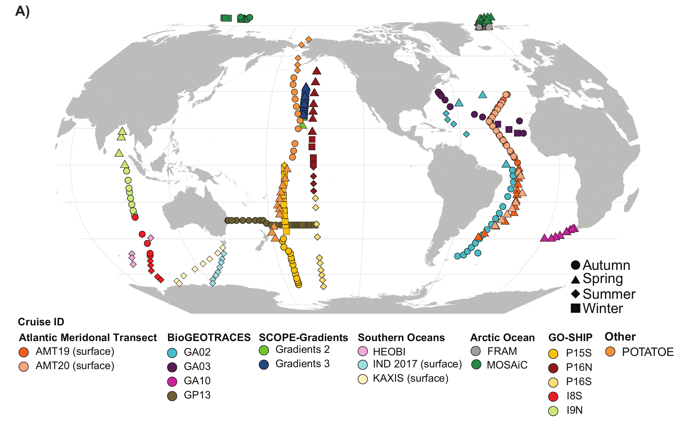

Simons CMAP
Browse and download the long-format dataset through a user-friendly ocean-data interface.
Open CMAP ↗Open global-ocean dataset
The Global rRNA Universal Metabarcoding of Plankton database brings bacteria, archaea, and eukaryotes into a single, directly comparable view of the ocean’s plankton community. Search taxonomic groups or ASV hashes and map their distributions across 1,194 global-ocean samples.

At a glance
GRUMP is a dataset from unfractionated (>0.2 µm) seawater samples that were sequenced using the universal 515FY–926R primer pair, which amplifies the nuclear 16S and 18S rRNA genes as well as the eukaryotic chloroplast 16S rRNA gene. These primers have been shown to accurately reproduce microbial abundances in prokaryotic mock communities and eukaryotic mock communities, and found to perfectly match 96% of all prokaryotic and eukaryotic target sequences in hundreds of marine metagenomes.
Because the entire plankton community within each sample is collected on a single filter and the sequencing is performed with one primer pair, organism abundances can be directly and quantitatively compared across domains and samples without the barriers created by separate size fractions or separate primer sets. The result is a high-resolution resource for investigating plankton biogeography, interactions, and links to ocean conditions.
Samples were collected between 2003 and 2020 along extensive latitudinal and longitudinal transects and depth profiles. GRUMP also includes environmental context such as temperature, salinity, oxygen, chlorophyll, nutrients, Longhurst provinces, ocean basins, depth categories, and predicted euphotic zones where available.
Explore GRUMP
The default view shows every GRUMP sample. Layer any combination of cruise, ocean basin, province, year, month, season, and depth category filters. Then search any GRUMP grouping, standard taxonomic rank, exact ASV hash, or ASV sequence. Light-grey dots show where samples exist, while blue circle size shows total relative abundance within each sample. ASVs recorded as unassigned are excluded from the current explorer.
Loading GRUMP samples…
Drag to pan · Scroll or pinch to zoom
Depth increases downward; latitude runs from south to north.
Browse and download the long-format dataset through a user-friendly ocean-data interface.
Open CMAP ↗Download the processed relative-abundance data and associated environmental covariates.
Open Zenodo ↗Use the workshop to find a taxon and build maps, depth profiles, and biogeographic summaries in R.
Start the workshop →Patch Notes
The current published release contains 1,194 profiles from all major ocean basins. The Zenodo and CMAP records are the primary public access points.
Characterizing organisms from three domains of life with universal primers from throughout the global ocean was published in Scientific Data.
Acknowledgements
GRUMP would not be possible without all of the people who contributed samples, laboratory work, metadata, bioinformatics, scientific guidance, and writing. We gratefully acknowledge every collaborator who helped bring this global resource together.
Paper acknowledgements
The published GRUMP data descriptor recognizes the many people, crews, institutions, and funding programs that made sample collection and analysis possible. The summary below is adapted from the paper’s acknowledgements.
Laura Furtado supported laboratory work, sequencing, and sample logistics. Bruce Yanpui Chan and Yi-Chun Yeh assisted with DNA extraction, amplification, and sequencing. Bror F. Jonsson provided Longhurst-province allocation scripts and predicted euphotic depths.
The project thanks the crews of the RV Polarstern expeditions PS99.2 and PS107 and the FRAM/HAUSGARTEN team. Additional technical contributions came from Jana Bäger, Theresa Hargesheimer, Rafael Stiens, Lili Hufnagel, Daniel Scholz, Normen Lochthofen, Janine Ludszuweit, Lennard Frommhold, Jonas Hagemann, Jakob Barz, Swantje Ziemann, Halina Tegetmeyer, and Laura Wischnewski.
The AMT acknowledgement includes the crew of the RRS James Cook, Stephanie Sargeant, and UK National Marine Facilities technicians. BioGEOTRACES support included the crews of the Pelagia, Southern Surveyor, Tangaroa, RRS James Cook, RRS Discovery, and Knorr, together with Kristin Bergauer, Heather A. Bouman, Thomas J. Browning, Daniele De Corte, Christel Hassler, Debbie Hulston, Jeremy E. Jacquot, Elizabeth W. Maas, Thomas Reinthaler, Eva Sintes, and Taichi Yokokawa. GRADIENTS support came from the crews of the Marcus G. Langseth and Kilo Moana and Chief Scientist Ginger Armbrust.
HEOBI, P15S, and INS2017 were supported through the CSIRO Marine National Facility and the crew of the RV Investigator. KAXIS was supported by the crew of the RV Aurora Australis and the Australian Antarctic Division Science Technical Support Team. The paper also recognizes Antarctic Science International Bursary support awarded to Swan L. S. Sow.
For I09N and I08S, the project thanks the crew of the Roger Revelle, Chantal Swan, Dave Menzies, and the trace-metal teams from the Chris Measures and Bill Landing laboratories. P16N and P16S support included the crews of the Thomas G. Thompson and Roger Revelle and Chief Scientists Christopher L. Sabine, Richard A. Feely, and Bernadette M. Sloyan. POTATOE samples were supported by the captain and crew of the RVIB Nathaniel B. Palmer.
Computing resources were provided by the University of Southern California Center for Advanced Research Computing. GRUMP was funded by the Simons Collaboration on Computational Biogeochemical Modeling of Marine Ecosystems, award 549943, and National Science Foundation grant EF-2125142.
Cite this paper
McNichol, J., Williams, N. L. R., Raut, Y. et al. Characterizing organisms from three domains of life with universal primers from throughout the global ocean. Scientific Data 12, 1078 (2025). https://doi.org/10.1038/s41597-025-05423-9